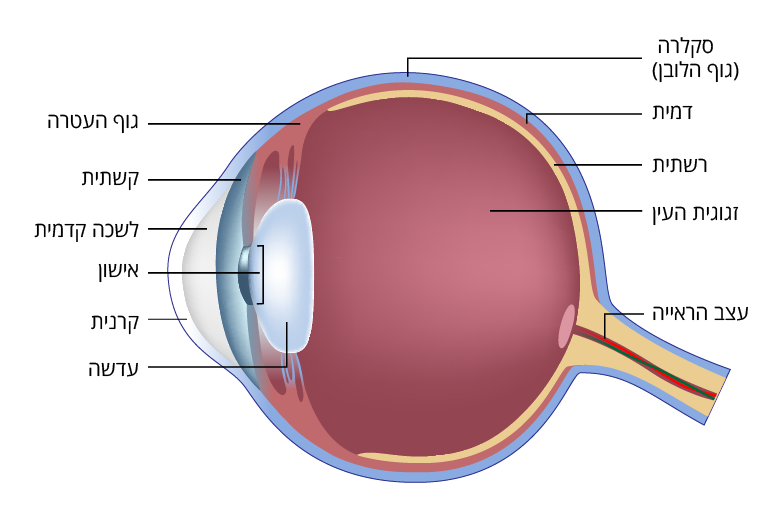

על המשחק
משחק זה נוצר עבור מילנה וחבריה לכיתה כדי ללמוד על מבנה העין בצורה כיפית ופשוטה!
במשחק תצטרכו לענות נכון על 5 שאלות בנושא העין. מותר לטעות עד 3 פעמים.
מבנה העין
- קרנית: החלק השקוף בקדמת העין שדרכו נכנס האור.
- אישון: החור השחור במרכז הקשתית.
- קשתית: החלק הצבעוני של העין.
- עדשה: מסדרת את האור כדי שנראה ברור.
- רשתית: המקום שבו האור הופך לתמונה שנשלחת למוח.
- עצב הראייה: מעביר את התמונה למוח.
- זגוגית העין: חומר שקוף כמו ג'לי שממלא את העין.
- דמית: שכבה עם כלי דם שמזינה את העין.
- סקלרה: החלק הלבן שמגן על העין מבחוץ.
- שרירי העין: מזיזים את העין לכל הכיוונים.
- לשכה קדמית: אזור מלא נוזל בין הקרנית לעדשה.
- גוף העטרה: שולט בצורה של העדשה כדי לעזור לראות מקרוב ורחוק.
בתמונה למטה תראו את חלקי העין. בהצלחה במשחק ובבדיקה מה אתם יודעים!
